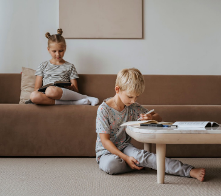
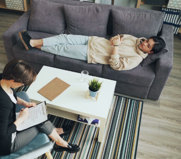
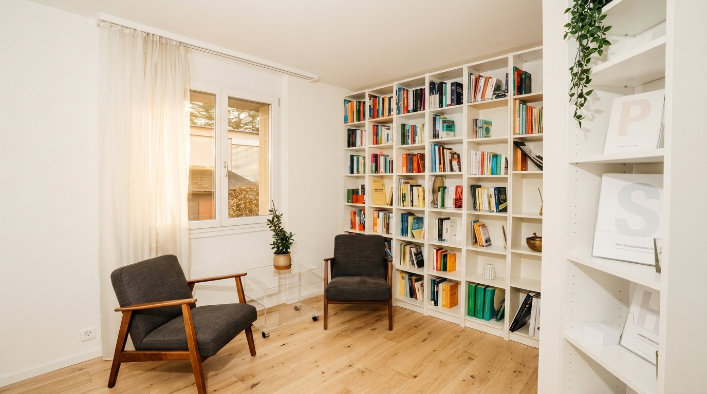

Un prim pas spre starea de bine.
Confidențialitate Totală
Spațiu sigur și protejat, ghidat de etică și secret profesional strict.
Atestat de Liberă Practică
Membru al Colegiului Psihologilor din România, formare clinică continuă.
Abordare Personalizată
Intervenții adaptate fiecărei etape de viață, ritm și nevoie emoțională.
Apel Gratuit de Cunoaștere
10-15 minute pentru a discuta fără obligații cum vă pot fi de ajutor.
Servicii Psihologice
Un cadru cald și empatic dedicat dezvoltării și echilibrului psihic.

Consiliere Copii
Un spațiu sigur și prietenos unde cei mici pot explora și depăși dificultățile emoționale prin joc și tehnici adaptate vârstei.

Consiliere Adolescenți
Sprijin empatic pentru tineri în perioade de tranziție, anxietate școlară, probleme de identitate sau dificultăți relaționale.
Consiliere Adulți
Spațiu de lucru pentru gestionarea stresului, a anxietății, a dificultăților de cuplu sau a crizelor personale, oferind claritate și echilibru.

„Fiecare om are în interior resursele necesare pentru a depăși momentele dificile. Rolul meu este să vă însoțesc cu răbdare și respect.”
O abordare caldă, lipsită de prejudecăți
Sunt Iulia Spînu, psiholog clinician și consilier dedicat sprijinirii celor care trec prin momente de cumpănă sau doresc o mai bună cunoaștere de sine.
Cabinetul meu din Bârlad a fost gândit ca un spațiu de siguranță, lumină și căldură. Aici, fiecare gând, îngrijorare sau emoție este întâmpinată cu ascultare activă și fără judecată, indiferent că este vorba despre un copil care învață să-și gestioneze emoțiile, un adolescent în căutarea propriei identități sau un adult copleșit de ritmul vieții cotidiene.
Recenzii pe Google
Construim o comunitate bazată pe experiențe autentice și respect reciproc.
Părerea dumneavoastră contează
Dacă ați trecut pragul cabinetului nostru sau ați beneficiat de consiliere, vă invităm să împărtășiți experiența dumneavoastră pe Google. Recenzia dumneavoastră îi poate ajuta pe alți părinți, adolescenți sau adulți să facă primul pas cu încredere.
Întrebări Frecvente
Răspunsuri la cele mai comune întrebări înainte de prima ședință.